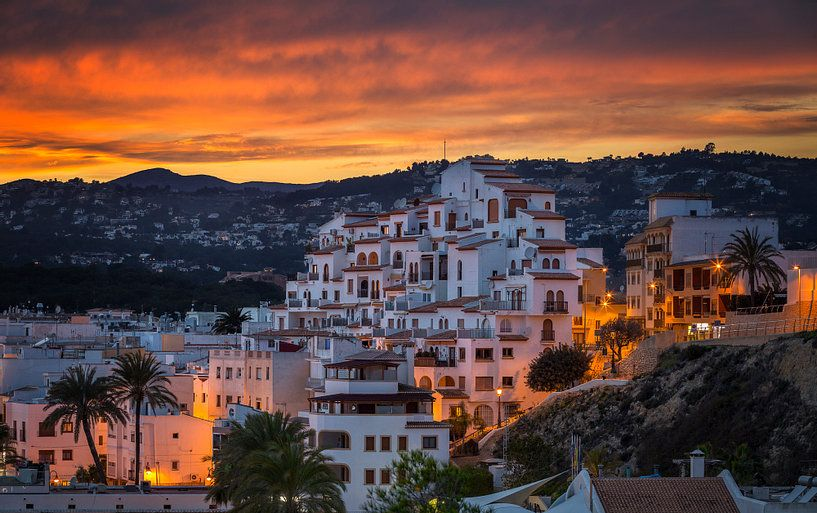
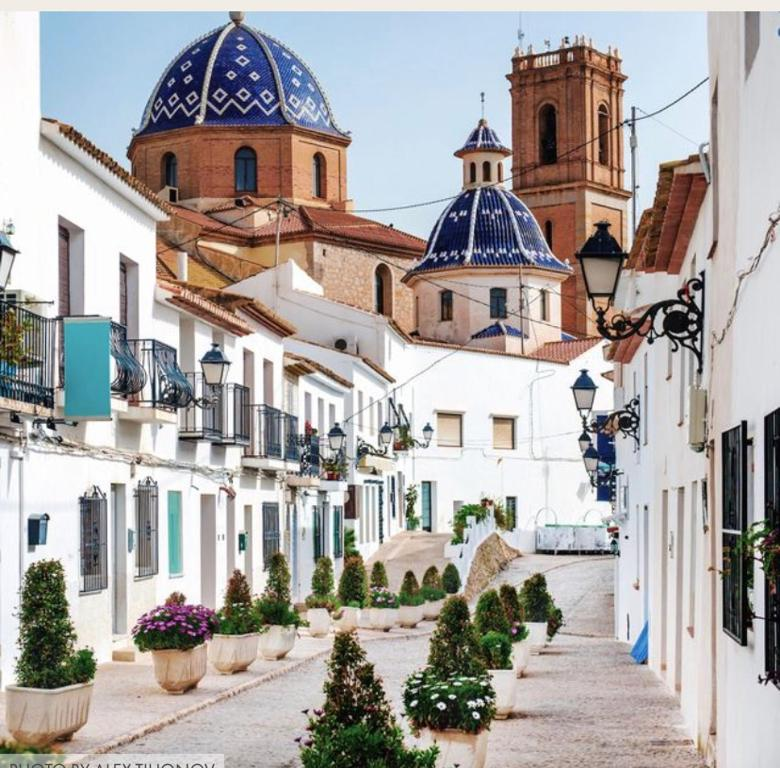
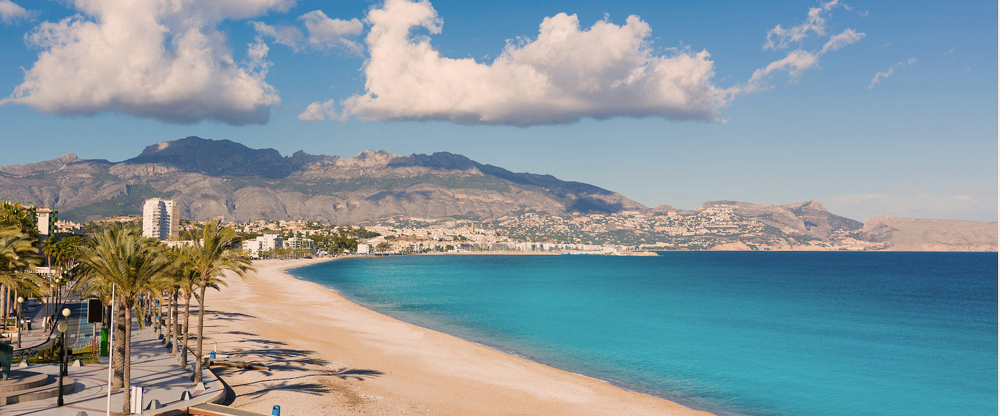
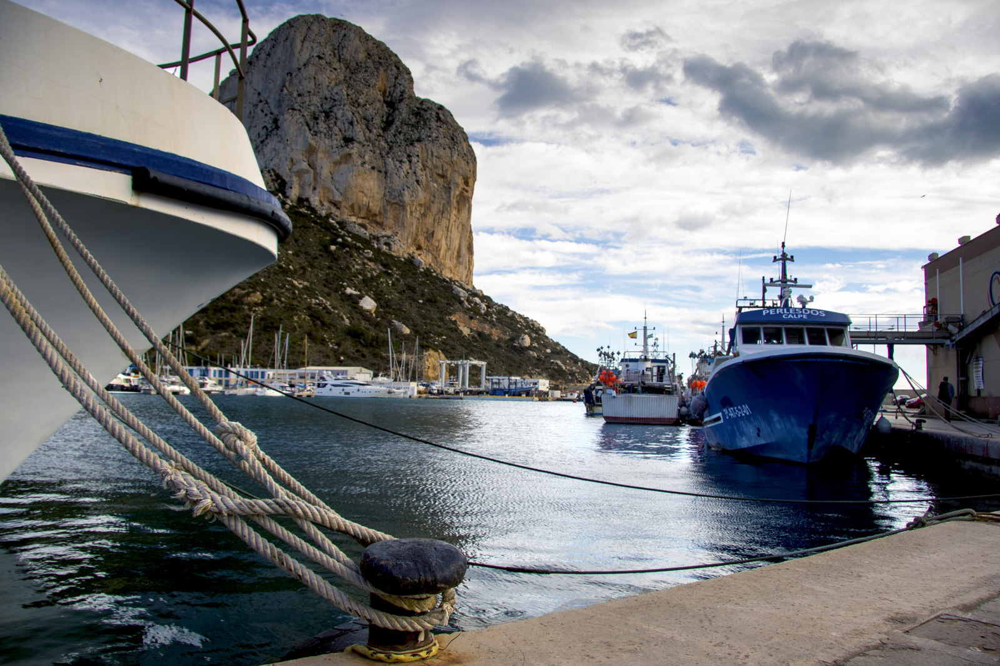
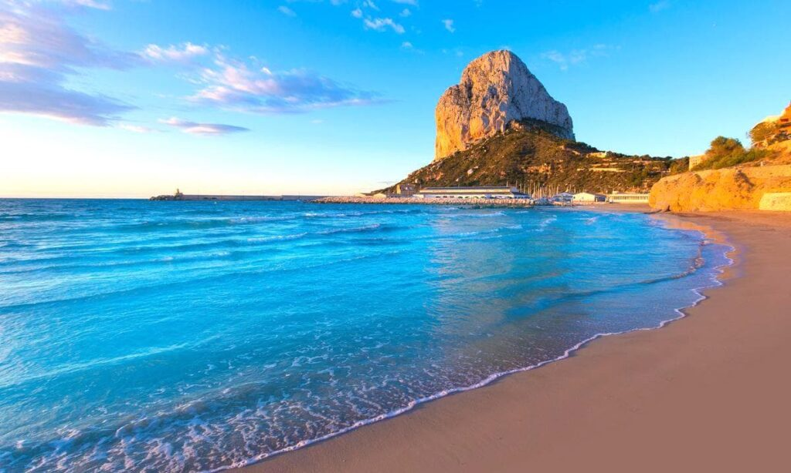
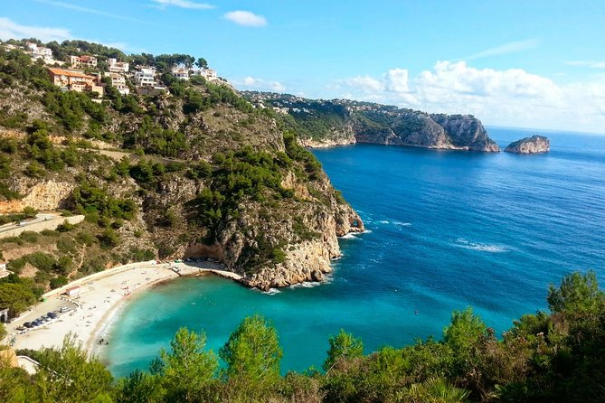
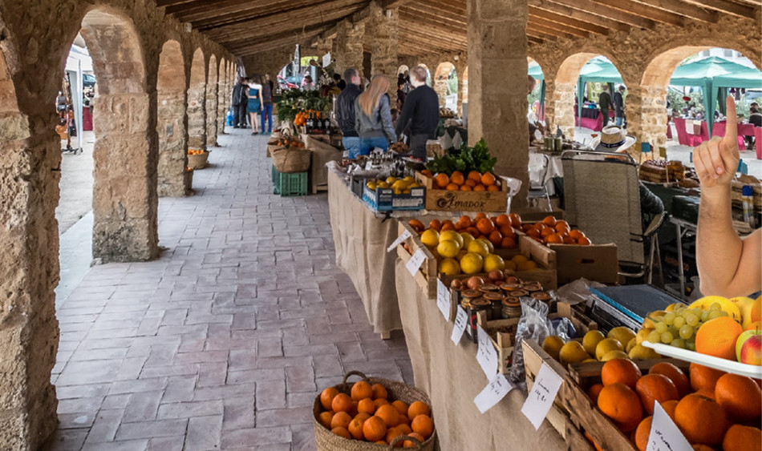
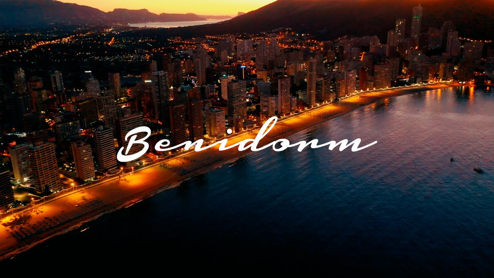
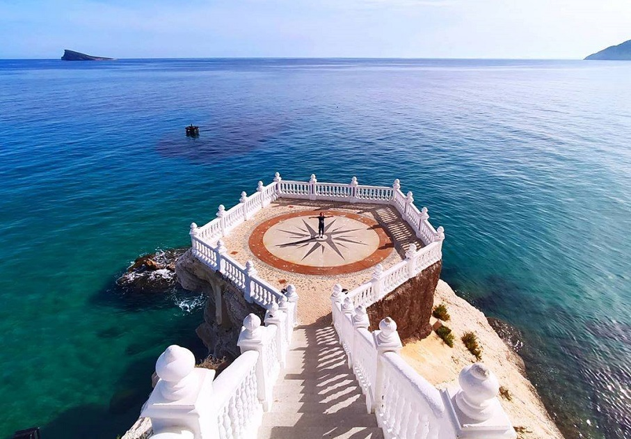

Denia, Javea, Calpe en Altea zijn bekende en gezellige plaatsen langs de kust van de Costa Blanca en wie van drukte, shoppen en pretparken houdt zal zich uitstekend vermaken in Benidorm.
Ook de typisch Spaanse stad Alicante met haar mooie jachthaven, winkels en strand ligt binnen handbereik evenals de Sinaasappelstad Valencia (resp. een uur en een uur en een kwartier rijden vanuit Moraira).
Hieronder treft u meer info aan over een aantal van deze plaatsen, voor ieder wat wils!

Aan de voet van het Sierra de Berniagebergte is het oude Altea tegen een heuvel gebouwd met fier boven de huizen uitprijkend de karakteristieke parochiekerk met blauw-wit betegelde koepel.
Een bekend herkenningspunt in het landschap.
Wandelend door alle, met keien geplaveide straatjes endoor de stijle smalle, met keien geplaveide straatjes en langs de blauwe en witte gevels, wordt u getracteerd op de meest pittoreske doorkijkjes in steegjes en op zee.
De stijgende weggetjes leiden uiteindelijk naar het kerkplein van de Virgen del Consuelo-kerk, waar in de zomermaanden kunstenaars bijeenkomen om hun werk te tonen.
Nabij dit pleintje is een werkelijk spectaculair uitzichtpunt wat u niet mag missen.
Aan de voet van de stad ligt een lange promenade met gezellige terrasjes, restaurants en bars en de winkelstraat Avenida del Rey Jaime I.
Elke namiddag wordt in de haven versgevangen vis verkocht. In en om Altea zijn in de zomer volop traditionele, locale dorpsfeesten; een van de mooiste is in september "Moros y Cristianos", met kleurige optochten door de straten.

Altea heeft zo'n 6 kilometer strand, afwisselend rots- en kiezelstranden.
Het Playa de la Roda ligt langs het oude stadscentrum. Het hoofdstrand Playa de Cap Blanch, is gelegen aan de zuidkant en loopt door tot het strand van Albir.
Het noordelijk gelegen Playa de Cap Negret is een kiezelstrand dat doorloopt in een kleine grot met zwarte keien met de naam Cala del Soio.
L'Olla is een ander frequent bezocht strand aan de andere kant van het smalle eiland met dezelfde naam.
De zuidelijke stadsgens van Altea loopt door tot aan Mascarat en de Sierra de Bernia, waar de Barreta, de Solsida en de Galera grotten zijn gesitueerd.
Tips voor dagtochtjes zijn er genoeg. In vroegere tijden lag het stadscentrum van Altea aan de weg naar de Sierra de Bernia en wordt nu Altea la Vella of Altea La Vieja genoemd en ligt op 3 km van het huidige Altea.
De Sierra de Bernia, met zijn bekende Font del Garroferet en oude fort is een aanrader te bezoeken.
Het bezienswaardige Guadalest (24 km) is te bereiken via het typische bergdorp Callosa d'En Sarrià, en is gebouwd tegen de rotsen aan een stuwmeer.
Het Sierra de Berniagebergte strekt zich loodrecht op de kustlijn uit en vormt een prachtig decor van de golfclub Don Cayo - één van de 12 clubs in de provincie Alicante - met een zeer aantrekkelijke 9-holes baan omgeven door mediterraan bos.
Op vele holes heeft u tevens de blauwe zee op de achtergrond.
De meeste watersportmogelijkheden vindt u in Altea zelf; zeilen kan uitstekend vanuit het nabij gelegen Puerto Luis Campomanes (6 km).
Overigens lenen de omgeving en het prettige klimaat zich uitstekend voor fantastische wandelingen en paardrijtochten.

Calpe is gegroeid vanuit een traditionele Mediterraans vissersdorp en Calpe haven maakt nog steeds actief deel uit van het lokale leven.
De schepen varen iedere ochtend uit en de vangst wordt verhandeld op de veiling om de voorraden van de restaurants van Calpe aan te vullen.
Toeristische schepen liggen naast de vissersboten en bieden minicruises aan langs de Costa Blanca kust en er zijn ook excursies mogelijk met boten met glazen bodem van waaruit je het onderwaterleven kunt bewonderen.

De stranden in Calpe hebben allemaal de "blauwe vlag" kwalificatie. Deze graadmeter is geïntroduceerd in 1987 in het Europese jaar van het Milieu.
Ieder jaar wordt er een prijs uitgereikt door de Europese Federatie van Milieu Onderwijs aan stranden die in uitstekende condities zijn en complete services bieden.
Calpe's authentieke en populaire visrestaurants serveren een compleet aanbod van vaak verse vis.
De traditionele lunch is natuurlijk Paella en welke Paella variant u ook kiets, het is een heerlijke maaltijd samen met een glaasje heerlijke Valenciaanse wijn.
Populaire alternatieven zijn Calamares (inktvis) "al la romana" gefrituurd in boter of in knoflooksaus of een schotel met gefrituurde sardientjes met brood, olijfolie en een Valenciaanse salade.

Xàbia (in het Spaans ook aangeduid als Jávea) is een vissersdorp dat uitgegroeid tot een belangrijke toeristische bestemming aan de Costa Blanca.
Xàbia ligt ongeveer halverwege de Costa Blanca, tussen Calpe en Dénia in.

De oude kern van Xàbia ligt niet direct aan het water, maar ongeveer een kilometer landinwaarts.
Hier in de oude smalle straten is van het massatoerisme weinig merkbaar. Hier vind je prachtige bouwwerken zoals de kerk van Sant Bartomeu en de Kapel van Santa Anna.
Wie de oude binnenstad van Xàbia wil bezoeken die moet er rekening mee houden dat parkeerplek niet altijd even eenvoudig te vinden is.

De haven Duanes del Mar bestaat uit twee delen: de jachthaven en de vissershaven.
Jávea heeft nog veel van zijn authenticiteit behouden en is ideaal voor diegenen die op zoek zijn naar een rustige en gezonde vakantie of levensstijl.
Benidorm is de grootste badplaats aan de 'Costa Blanca', letterlijk 'witte kust', genoemd naar de schitterende witte zandstranden.
De Costa Blanca kent vele bezienswaardigheden en culturele excursies. Benidorm heeft twee van de hoogst aangeschreven stranden van Europa.
Ze hebben in 1997 een onderscheiding gekregen voor het schone water en zand. In totaal is er meer dan vier kilometer strand, dus voor iedereen is er een plekje.
In het gezellige oude centrum met kleine straatjes en mooie pleinen, bevinden zich overal Nederlandse restaurants, Spaanse tapasbars, gezellige cafes en een heleboel andere uitgaansgelegenheden.
Benidorm wordt door bergen omringd, hierdoor wordt het klimaat gunstig beinvloed maar tevens biedt het binnenland daardoor interessante bergdorpen, prachtige autoroutes en een indrukwekkende natuur.
In de stad zelf is het heerlijk winkelen in de wijk Rincon de Loix of in het sfeervolle centrum.
Verder kan je er prima relaxen op een terrasje in de schaduw of in de zon en kun je genieten van het swingende nachtleven.

In het oude centrum van Benidorm vind je veel gezellige bars, restaurants en kroegjes.
Een absolute 'must' is een bezoek aan tapasbar La Cava Aragonesa.
Maar het is ook mogelijk je thuis te voelen in een van de vele Nederlandse kroegen zoals Cafe die Twee, Het Paaltje of De Kroon.
Ter hoogte van Benidorm ligt aan de AP7 een groot shoppingcentre La Marina met winkels als Zara, H&M, Mango etc.
In het oude centrum vindt u een aantal authentieke winkels met bijvoorbeeld handgemaakte tafelkleden en typisch Spaanse etenswaren.
De meeste winkels zijn open van 9 tot 14 uur en van 17 tot 20 uur.
In toeristencentra zijn de winkels vaak tot 22 uur open. Op zaterdagmiddag en zondag zijn veel winkels gesloten m.u.v. de grote overdekte winkelcentra, die veelal 7 dagen in de week van 9 tot 22 uur geopend zijn.
